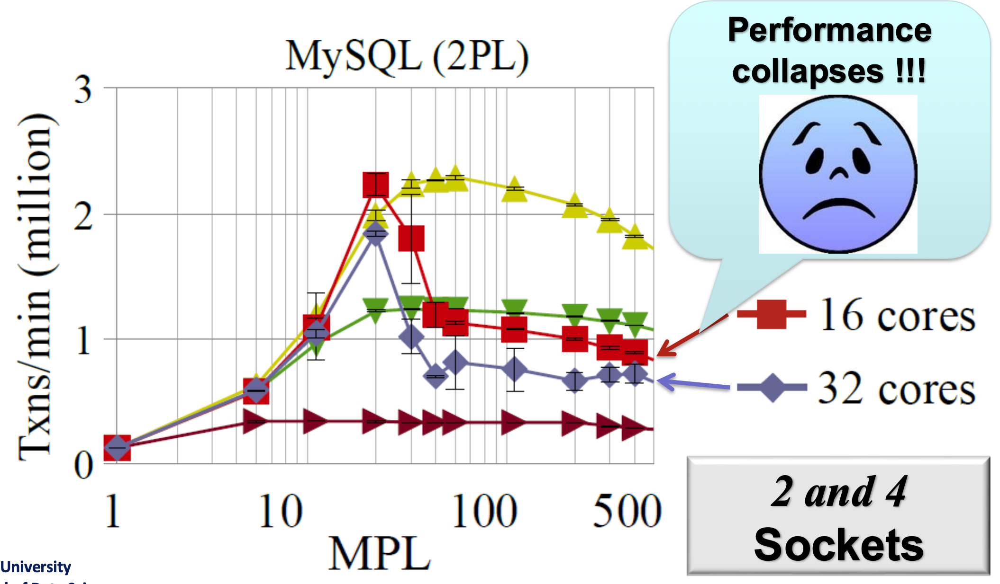
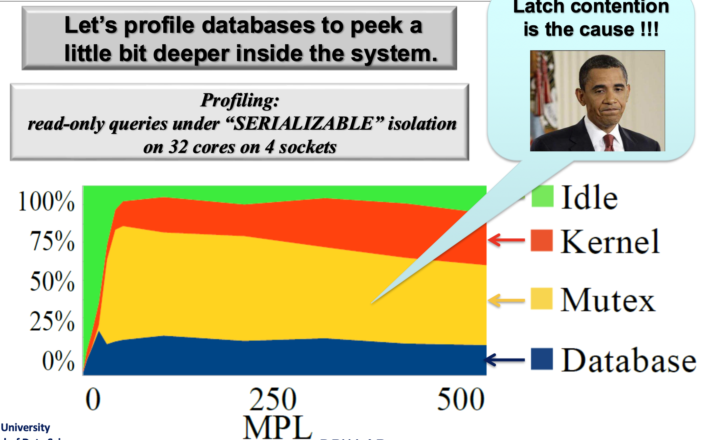
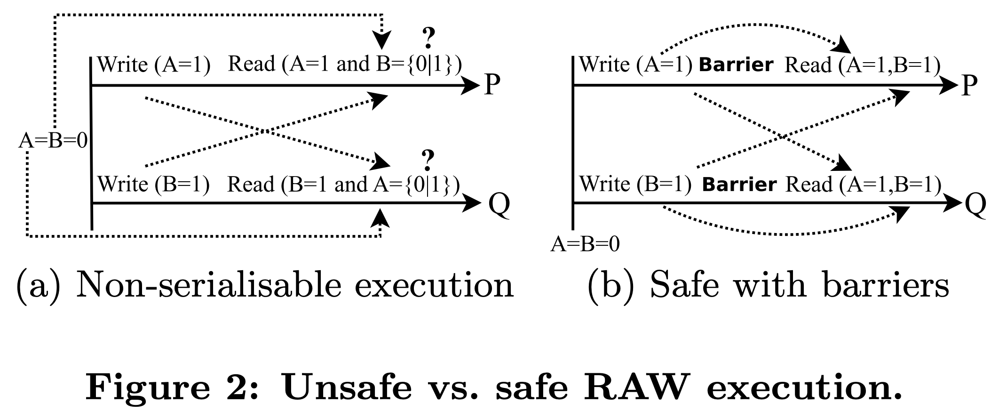
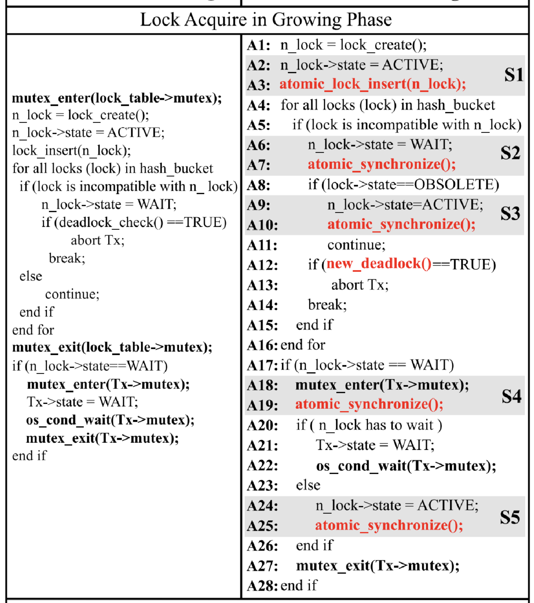
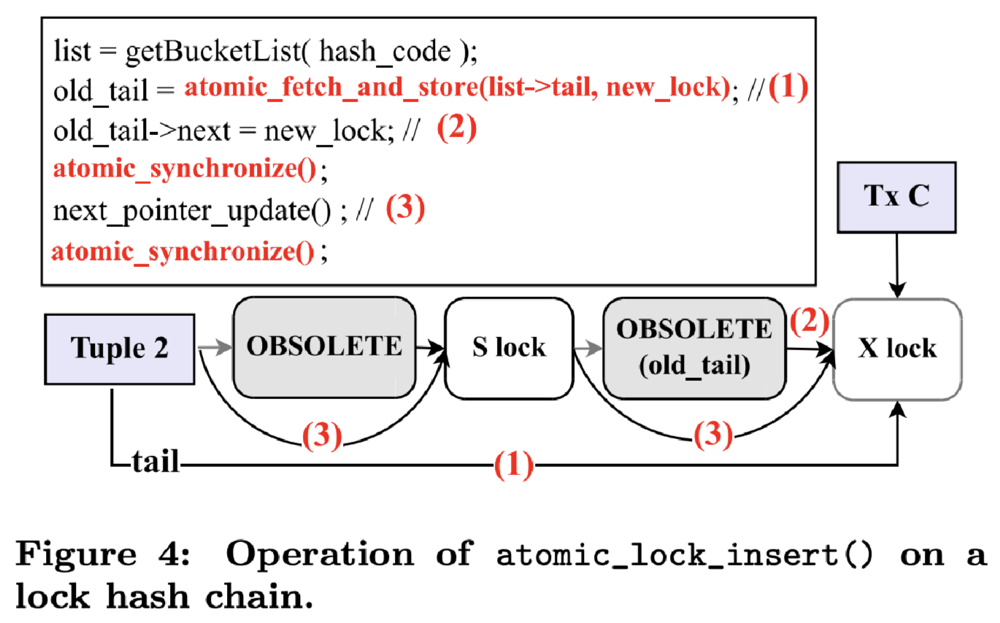
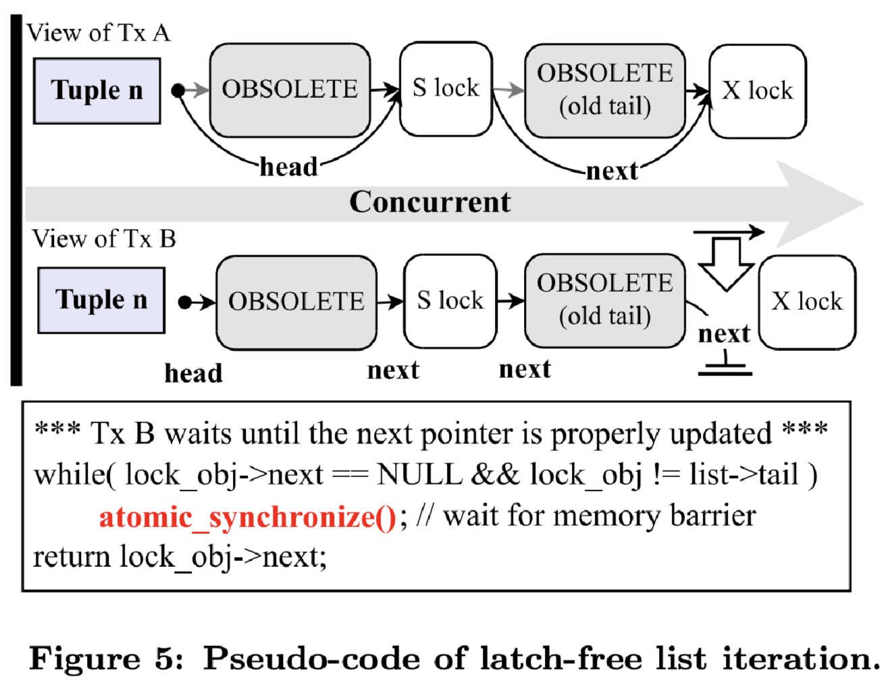
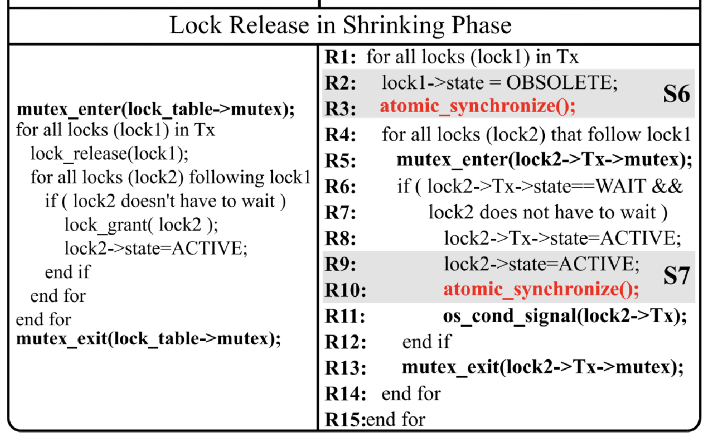

<!DOCTYPE html>
<html><head><title>(논문 요약) A Scalable Lock Manager for Multicores (SIGMOD'13)</title><meta charSet="utf-8"/><meta name="viewport" content="width=device-width, initial-scale=1.0"/><meta property="og:title" content="(논문 요약) A Scalable Lock Manager for Multicores (SIGMOD'13)"/><meta property="og:description" content="원본 논문 이 글은 A Scalable Lock Manager for Multicores (SIGMOD’13) 논문을 읽고 정리한 글입니다. 별도의 명시가 없으면, 본 논문에서 그림을 가져왔습니다. Motivation § 위 그림은 Multi-Programming Level (MPL) 이 높아졌을 때, CPU core 개수에 대해 throughput 을 보여주는 그림이다."/><meta property="og:image" content="https://mdg.haeramk.im/static/og-image.png"/><meta property="og:width" content="1200"/><meta property="og:height" content="675"/><link rel="icon" href="../../../../../../static/icon.png"/><meta name="description" content="원본 논문 이 글은 A Scalable Lock Manager for Multicores (SIGMOD’13) 논문을 읽고 정리한 글입니다. 별도의 명시가 없으면, 본 논문에서 그림을 가져왔습니다. Motivation § 위 그림은 Multi-Programming Level (MPL) 이 높아졌을 때, CPU core 개수에 대해 throughput 을 보여주는 그림이다."/><meta name="generator" content="Quartz"/><link rel="preconnect" href="https://fonts.googleapis.com"/><link rel="preconnect" href="https://fonts.gstatic.com"/><link href="../../../../../../index.css" rel="stylesheet" type="text/css" spa-preserve/><link href="https://cdn.jsdelivr.net/npm/katex@0.16.0/dist/katex.min.css" rel="stylesheet" type="text/css" spa-preserve/><link href="https://fonts.googleapis.com/css2?family=IBM Plex Mono&amp;family=Gowun Batang:wght@400;700&amp;family=Gowun Dodum:ital,wght@0,400;0,600;1,400;1,600&amp;display=swap" rel="stylesheet" type="text/css" spa-preserve/><script src="../../../../../../prescript.js" type="application/javascript" spa-preserve></script><script type="application/javascript" spa-preserve>const fetchData = fetch(`../../../../../../static/contentIndex.json`).then(data => data.json())</script></head><body data-slug="gardens/database/transaction/papers/scalable-lock-manager-for-multicores.2013.sigmod.org/extra/A-Scalable-Lock-Manager-for-Multicores-(SIGMOD'13,-Short-Review)"><div id="quartz-root" class="page"><div id="quartz-body"><div class="left sidebar"><h1 class="page-title "><a href="../../../../../..">Madison Digital Garden</a></h1><div class="spacer mobile-only"></div><div class="search "><div id="search-icon"><p>Search</p><div></div><svg tabIndex="0" aria-labelledby="title desc" role="img" xmlns="http://www.w3.org/2000/svg" viewBox="0 0 19.9 19.7"><title id="title">Search</title><desc id="desc">Search</desc><g class="search-path" fill="none"><path stroke-linecap="square" d="M18.5 18.3l-5.4-5.4"></path><circle cx="8" cy="8" r="7"></circle></g></svg></div><div id="search-container"><div id="search-space"><input autocomplete="off" id="search-bar" name="search" type="text" aria-label="Search for something" placeholder="Search for something"/><div id="results-container"></div></div></div></div><div class="darkmode "><input class="toggle" id="darkmode-toggle" type="checkbox" tabIndex="-1"/><label id="toggle-label-light" for="darkmode-toggle" tabIndex="-1"><svg xmlns="http://www.w3.org/2000/svg" xmlnsXlink="http://www.w3.org/1999/xlink" version="1.1" id="dayIcon" x="0px" y="0px" viewBox="0 0 35 35" style="enable-background:new 0 0 35 35;" xmlSpace="preserve"><title>Light mode</title><path d="M6,17.5C6,16.672,5.328,16,4.5,16h-3C0.672,16,0,16.672,0,17.5    S0.672,19,1.5,19h3C5.328,19,6,18.328,6,17.5z M7.5,26c-0.414,0-0.789,0.168-1.061,0.439l-2,2C4.168,28.711,4,29.086,4,29.5    C4,30.328,4.671,31,5.5,31c0.414,0,0.789-0.168,1.06-0.44l2-2C8.832,28.289,9,27.914,9,27.5C9,26.672,8.329,26,7.5,26z M17.5,6    C18.329,6,19,5.328,19,4.5v-3C19,0.672,18.329,0,17.5,0S16,0.672,16,1.5v3C16,5.328,16.671,6,17.5,6z M27.5,9    c0.414,0,0.789-0.168,1.06-0.439l2-2C30.832,6.289,31,5.914,31,5.5C31,4.672,30.329,4,29.5,4c-0.414,0-0.789,0.168-1.061,0.44    l-2,2C26.168,6.711,26,7.086,26,7.5C26,8.328,26.671,9,27.5,9z M6.439,8.561C6.711,8.832,7.086,9,7.5,9C8.328,9,9,8.328,9,7.5    c0-0.414-0.168-0.789-0.439-1.061l-2-2C6.289,4.168,5.914,4,5.5,4C4.672,4,4,4.672,4,5.5c0,0.414,0.168,0.789,0.439,1.06    L6.439,8.561z M33.5,16h-3c-0.828,0-1.5,0.672-1.5,1.5s0.672,1.5,1.5,1.5h3c0.828,0,1.5-0.672,1.5-1.5S34.328,16,33.5,16z     M28.561,26.439C28.289,26.168,27.914,26,27.5,26c-0.828,0-1.5,0.672-1.5,1.5c0,0.414,0.168,0.789,0.439,1.06l2,2    C28.711,30.832,29.086,31,29.5,31c0.828,0,1.5-0.672,1.5-1.5c0-0.414-0.168-0.789-0.439-1.061L28.561,26.439z M17.5,29    c-0.829,0-1.5,0.672-1.5,1.5v3c0,0.828,0.671,1.5,1.5,1.5s1.5-0.672,1.5-1.5v-3C19,29.672,18.329,29,17.5,29z M17.5,7    C11.71,7,7,11.71,7,17.5S11.71,28,17.5,28S28,23.29,28,17.5S23.29,7,17.5,7z M17.5,25c-4.136,0-7.5-3.364-7.5-7.5    c0-4.136,3.364-7.5,7.5-7.5c4.136,0,7.5,3.364,7.5,7.5C25,21.636,21.636,25,17.5,25z"></path></svg></label><label id="toggle-label-dark" for="darkmode-toggle" tabIndex="-1"><svg xmlns="http://www.w3.org/2000/svg" xmlnsXlink="http://www.w3.org/1999/xlink" version="1.1" id="nightIcon" x="0px" y="0px" viewBox="0 0 100 100" style="enable-background='new 0 0 100 100'" xmlSpace="preserve"><title>Dark mode</title><path d="M96.76,66.458c-0.853-0.852-2.15-1.064-3.23-0.534c-6.063,2.991-12.858,4.571-19.655,4.571  C62.022,70.495,50.88,65.88,42.5,57.5C29.043,44.043,25.658,23.536,34.076,6.47c0.532-1.08,0.318-2.379-0.534-3.23  c-0.851-0.852-2.15-1.064-3.23-0.534c-4.918,2.427-9.375,5.619-13.246,9.491c-9.447,9.447-14.65,22.008-14.65,35.369  c0,13.36,5.203,25.921,14.65,35.368s22.008,14.65,35.368,14.65c13.361,0,25.921-5.203,35.369-14.65  c3.872-3.871,7.064-8.328,9.491-13.246C97.826,68.608,97.611,67.309,96.76,66.458z"></path></svg></label></div></div><div class="center"><div class="page-header"><div class="popover-hint"><h1 class="article-title ">(논문 요약) A Scalable Lock Manager for Multicores (SIGMOD'13)</h1><p class="content-meta ">May 05, 2025, 8 min read</p><ul class="tags "><li><a href="../../../../../../tags/database" class="internal tag-link">#database</a></li><li><a href="../../../../../../tags/db-concurrency" class="internal tag-link">#db-concurrency</a></li></ul></div></div><article class="popover-hint"><blockquote class="callout" data-callout="info">
<div class="callout-title">
                  <div class="callout-icon"><svg xmlns="http://www.w3.org/2000/svg" width="100%" height="100%" viewBox="0 0 24 24" fill="none" stroke="currentColor" stroke-width="2" stroke-linecap="round" stroke-linejoin="round"><circle cx="12" cy="12" r="10"></circle><line x1="12" y1="16" x2="12" y2="12"></line><line x1="12" y1="8" x2="12.01" y2="8"></line></svg></div>
                  <div class="callout-title-inner"><p>원본 논문 </p></div>
                  
                </div>
<ul>
<li>이 글은 <a href="https://dl.acm.org/doi/pdf/10.1145/2463676.2465271" class="external">A Scalable Lock Manager for Multicores (SIGMOD’13)</a> 논문을 읽고 정리한 글입니다.</li>
<li>별도의 명시가 없으면, 본 논문에서 그림을 가져왔습니다.</li>
</ul>
</blockquote>
<h2 id="motivation">Motivation<a aria-hidden="true" tabindex="-1" href="#motivation" class="internal"> §</a></h2>
<p></p>
<ul>
<li>위 그림은 <em>Multi-Programming Level</em> (<em>MPL</em>) 이 높아졌을 때, CPU core 개수에 대해 throughput 을 보여주는 그림이다.</li>
<li>보면 갈색이 1 core, 초록색이 4 core 인데 이때까지는 같은 socket 내의 core 라서 그나마 성능 방어가 잘 되는데</li>
<li>노란색인 8 core 부터는 같은 socket 이라도 성능이 좀 꺾이기 시작하더니 다른 socket 의 core 도 사용하는 16, 32 core 의 경우에는 성능이 바닥을 친다.</li>
</ul>
<p></p>
<ul>
<li>이것의 원인을 알기 위해 profile 을 해보면, kernel 과 mutex 가 차지하고 있는 것을 알 수 있다.
<ul>
<li>이것 둘다 <a href="../../../../../../gardens/os/process/drafts/Spin-Lock-(Process)" class="internal" data-slug="gardens/os/process/drafts/Spin-Lock-(Process)">Spin lock</a> 와 연관이 있는데, spin lock 에서 cache invalid message 가 socket 간에 계속 왔다갔다 하기 때문이다.</li>
</ul>
</li>
<li>그리고 더 파보니 lock manager 의 operation 을 통째로 막아버리는 giant latch 이 문제임을 알아냈고, 본 논문은 이 latch 를 없애 성능 향상을 기하는 것이 목표이다.
<ul>
<li>왜냐면 원래 spin lock 이라는 것은 busy-wait 하기 때문에 짧은 기간동안 critical section 을 보호하는 것이 능한데, lock manager 의 giant latch 로 이것을 막아버리면 latch 가 잡혀있는 기간이 길기 때문에 그에 따라 cache invalidation 도 많아지는 것이다.</li>
</ul>
</li>
</ul>
<h2 id="key-idea">Key Idea<a aria-hidden="true" tabindex="-1" href="#key-idea" class="internal"> §</a></h2>
<ul>
<li>Lock table 은 linked-list 를 element 로 하는 hash table 이다. 따라서 이 각각의 linked-list 에 대해서 latch 없이 정확하게 작동하면 될 것이다.</li>
<li>Latch 를 제거하는데 핵심 아이디어 두개는 <em>RAW</em> 와 <em>Staged de-allocate</em> 이다.</li>
</ul>
<h3 id="read-after-write-raw">Read After Write, RAW<a aria-hidden="true" tabindex="-1" href="#read-after-write-raw" class="internal"> §</a></h3>
<ul>
<li>우선 여기서 <em>Read After Write</em> 라는 것은 shared variable 하나를 write 한 다음, 다른 shared variable 하나를 read 하는 것이라고 생각하면 된다.</li>
<li>이때 조심할 것은 이렇게 되면 이 두 write 와 read 간에는 <a href="../../../../../../gardens/arch/dependence/terms/Data-Dependence-(Arch)" class="internal" data-slug="gardens/arch/dependence/terms/Data-Dependence-(Arch)">RAW dependence</a> 가 없기 때문에 compiler 혹은 <a href="../../../../../../gardens/arch/ilp/Instruction-Level-Parallelism-(Arch)" class="internal" data-slug="gardens/arch/ilp/Instruction-Level-Parallelism-(Arch)">Superscalar</a> 에서는 이놈의 순서를 바꿔서 실행할 수 있다.</li>
<li>하지만 이러면 문제가 생긴다. 아래 그림에서 (a) 를 보자.</li>
</ul>
<p></p>
<ul>
<li><span class="math math-inline"><span class="katex"><span class="katex-html" aria-hidden="true"><span class="base"><span class="strut" style="height:0.6833em;"></span><span class="mord mathnormal" style="margin-right:0.13889em;">P</span></span></span></span></span> 는 A 를 write 하고 (<span class="math math-inline"><span class="katex"><span class="katex-html" aria-hidden="true"><span class="base"><span class="strut" style="height:0.6833em;"></span><span class="mord mathnormal" style="margin-right:0.13889em;">P</span><span class="mspace" style="margin-right:0.2778em;"></span><span class="mrel">:</span><span class="mspace" style="margin-right:0.2778em;"></span></span><span class="base"><span class="strut" style="height:0.6833em;"></span><span class="mord mathnormal">A</span><span class="mspace" style="margin-right:0.2778em;"></span><span class="mrel">=</span><span class="mspace" style="margin-right:0.2778em;"></span></span><span class="base"><span class="strut" style="height:0.6444em;"></span><span class="mord">1</span></span></span></span></span>), B 를 read 한다 (<span class="math math-inline"><span class="katex"><span class="katex-html" aria-hidden="true"><span class="base"><span class="strut" style="height:0.6833em;"></span><span class="mord mathnormal" style="margin-right:0.13889em;">P</span><span class="mspace" style="margin-right:0.2778em;"></span><span class="mrel">:</span><span class="mspace" style="margin-right:0.2778em;"></span></span><span class="base"><span class="strut" style="height:0.6833em;"></span><span class="mord mathnormal" style="margin-right:0.05017em;">B</span><span class="mspace" style="margin-right:0.2778em;"></span><span class="mrel">=</span></span><span class="base"><span class="strut" style="height:0.6944em;"></span><span class="mclose">?</span></span></span></span></span>). 그리고 <span class="math math-inline"><span class="katex"><span class="katex-html" aria-hidden="true"><span class="base"><span class="strut" style="height:0.8778em;vertical-align:-0.1944em;"></span><span class="mord mathnormal">Q</span></span></span></span></span> 는 반대로 B 를 write 하고 (<span class="math math-inline"><span class="katex"><span class="katex-html" aria-hidden="true"><span class="base"><span class="strut" style="height:0.8778em;vertical-align:-0.1944em;"></span><span class="mord mathnormal">Q</span><span class="mspace" style="margin-right:0.2778em;"></span><span class="mrel">:</span><span class="mspace" style="margin-right:0.2778em;"></span></span><span class="base"><span class="strut" style="height:0.6833em;"></span><span class="mord mathnormal" style="margin-right:0.05017em;">B</span><span class="mspace" style="margin-right:0.2778em;"></span><span class="mrel">=</span><span class="mspace" style="margin-right:0.2778em;"></span></span><span class="base"><span class="strut" style="height:0.6444em;"></span><span class="mord">1</span></span></span></span></span>), A 를 읽는다 (<span class="math math-inline"><span class="katex"><span class="katex-html" aria-hidden="true"><span class="base"><span class="strut" style="height:0.8778em;vertical-align:-0.1944em;"></span><span class="mord mathnormal">Q</span><span class="mspace" style="margin-right:0.2778em;"></span><span class="mrel">:</span><span class="mspace" style="margin-right:0.2778em;"></span></span><span class="base"><span class="strut" style="height:0.6833em;"></span><span class="mord mathnormal">A</span><span class="mspace" style="margin-right:0.2778em;"></span><span class="mrel">=</span></span><span class="base"><span class="strut" style="height:0.6944em;"></span><span class="mclose">?</span></span></span></span></span>).</li>
<li>그럼 일반적으로는 다음과 같은 경우의 수를 생각할 수 있다.
<ul>
<li>(1) <span class="math math-inline"><span class="katex"><span class="katex-html" aria-hidden="true"><span class="base"><span class="strut" style="height:0.6833em;"></span><span class="mord mathnormal" style="margin-right:0.13889em;">P</span><span class="mspace" style="margin-right:0.2778em;"></span><span class="mrel">:</span><span class="mspace" style="margin-right:0.2778em;"></span></span><span class="base"><span class="strut" style="height:0.6833em;"></span><span class="mord mathnormal">A</span><span class="mspace" style="margin-right:0.2778em;"></span><span class="mrel">=</span><span class="mspace" style="margin-right:0.2778em;"></span></span><span class="base"><span class="strut" style="height:0.6444em;"></span><span class="mord">1</span></span></span></span></span> (2) <span class="math math-inline"><span class="katex"><span class="katex-html" aria-hidden="true"><span class="base"><span class="strut" style="height:0.8778em;vertical-align:-0.1944em;"></span><span class="mord mathnormal">Q</span><span class="mspace" style="margin-right:0.2778em;"></span><span class="mrel">:</span><span class="mspace" style="margin-right:0.2778em;"></span></span><span class="base"><span class="strut" style="height:0.6833em;"></span><span class="mord mathnormal" style="margin-right:0.05017em;">B</span><span class="mspace" style="margin-right:0.2778em;"></span><span class="mrel">=</span><span class="mspace" style="margin-right:0.2778em;"></span></span><span class="base"><span class="strut" style="height:0.6444em;"></span><span class="mord">1</span></span></span></span></span> (3) <span class="math math-inline"><span class="katex"><span class="katex-html" aria-hidden="true"><span class="base"><span class="strut" style="height:0.6833em;"></span><span class="mord mathnormal" style="margin-right:0.13889em;">P</span><span class="mspace" style="margin-right:0.2778em;"></span><span class="mrel">:</span><span class="mspace" style="margin-right:0.2778em;"></span></span><span class="base"><span class="strut" style="height:0.6833em;"></span><span class="mord mathnormal" style="margin-right:0.05017em;">B</span><span class="mspace" style="margin-right:0.2778em;"></span><span class="mrel">=</span></span><span class="base"><span class="strut" style="height:0.6944em;"></span><span class="mclose">?</span></span></span></span></span> (4) <span class="math math-inline"><span class="katex"><span class="katex-html" aria-hidden="true"><span class="base"><span class="strut" style="height:0.8778em;vertical-align:-0.1944em;"></span><span class="mord mathnormal">Q</span><span class="mspace" style="margin-right:0.2778em;"></span><span class="mrel">:</span><span class="mspace" style="margin-right:0.2778em;"></span></span><span class="base"><span class="strut" style="height:0.6833em;"></span><span class="mord mathnormal">A</span><span class="mspace" style="margin-right:0.2778em;"></span><span class="mrel">=</span></span><span class="base"><span class="strut" style="height:0.6944em;"></span><span class="mclose">?</span></span></span></span></span> 라면, (3) 에서 <span class="math math-inline"><span class="katex"><span class="katex-html" aria-hidden="true"><span class="base"><span class="strut" style="height:0.6833em;"></span><span class="mord mathnormal" style="margin-right:0.13889em;">P</span></span></span></span></span> 는 <span class="math math-inline"><span class="katex"><span class="katex-html" aria-hidden="true"><span class="base"><span class="strut" style="height:0.6833em;"></span><span class="mord mathnormal" style="margin-right:0.05017em;">B</span><span class="mspace" style="margin-right:0.2778em;"></span><span class="mrel">=</span><span class="mspace" style="margin-right:0.2778em;"></span></span><span class="base"><span class="strut" style="height:0.6444em;"></span><span class="mord">1</span></span></span></span></span> 를 읽게 되고, (4) 에서 <span class="math math-inline"><span class="katex"><span class="katex-html" aria-hidden="true"><span class="base"><span class="strut" style="height:0.8778em;vertical-align:-0.1944em;"></span><span class="mord mathnormal">Q</span></span></span></span></span> 는 <span class="math math-inline"><span class="katex"><span class="katex-html" aria-hidden="true"><span class="base"><span class="strut" style="height:0.6833em;"></span><span class="mord mathnormal">A</span><span class="mspace" style="margin-right:0.2778em;"></span><span class="mrel">=</span><span class="mspace" style="margin-right:0.2778em;"></span></span><span class="base"><span class="strut" style="height:0.6444em;"></span><span class="mord">1</span></span></span></span></span> 를 읽게 된다.</li>
<li>(1) <span class="math math-inline"><span class="katex"><span class="katex-html" aria-hidden="true"><span class="base"><span class="strut" style="height:0.6833em;"></span><span class="mord mathnormal" style="margin-right:0.13889em;">P</span><span class="mspace" style="margin-right:0.2778em;"></span><span class="mrel">:</span><span class="mspace" style="margin-right:0.2778em;"></span></span><span class="base"><span class="strut" style="height:0.6833em;"></span><span class="mord mathnormal">A</span><span class="mspace" style="margin-right:0.2778em;"></span><span class="mrel">=</span><span class="mspace" style="margin-right:0.2778em;"></span></span><span class="base"><span class="strut" style="height:0.6444em;"></span><span class="mord">1</span></span></span></span></span> (2) <span class="math math-inline"><span class="katex"><span class="katex-html" aria-hidden="true"><span class="base"><span class="strut" style="height:0.6833em;"></span><span class="mord mathnormal" style="margin-right:0.13889em;">P</span><span class="mspace" style="margin-right:0.2778em;"></span><span class="mrel">:</span><span class="mspace" style="margin-right:0.2778em;"></span></span><span class="base"><span class="strut" style="height:0.6833em;"></span><span class="mord mathnormal" style="margin-right:0.05017em;">B</span><span class="mspace" style="margin-right:0.2778em;"></span><span class="mrel">=</span></span><span class="base"><span class="strut" style="height:0.6944em;"></span><span class="mclose">?</span></span></span></span></span> (3) <span class="math math-inline"><span class="katex"><span class="katex-html" aria-hidden="true"><span class="base"><span class="strut" style="height:0.8778em;vertical-align:-0.1944em;"></span><span class="mord mathnormal">Q</span><span class="mspace" style="margin-right:0.2778em;"></span><span class="mrel">:</span><span class="mspace" style="margin-right:0.2778em;"></span></span><span class="base"><span class="strut" style="height:0.6833em;"></span><span class="mord mathnormal" style="margin-right:0.05017em;">B</span><span class="mspace" style="margin-right:0.2778em;"></span><span class="mrel">=</span><span class="mspace" style="margin-right:0.2778em;"></span></span><span class="base"><span class="strut" style="height:0.6444em;"></span><span class="mord">1</span></span></span></span></span> (4) <span class="math math-inline"><span class="katex"><span class="katex-html" aria-hidden="true"><span class="base"><span class="strut" style="height:0.8778em;vertical-align:-0.1944em;"></span><span class="mord mathnormal">Q</span><span class="mspace" style="margin-right:0.2778em;"></span><span class="mrel">:</span><span class="mspace" style="margin-right:0.2778em;"></span></span><span class="base"><span class="strut" style="height:0.6833em;"></span><span class="mord mathnormal">A</span><span class="mspace" style="margin-right:0.2778em;"></span><span class="mrel">=</span></span><span class="base"><span class="strut" style="height:0.6944em;"></span><span class="mclose">?</span></span></span></span></span> 라면, (2) 에서 <span class="math math-inline"><span class="katex"><span class="katex-html" aria-hidden="true"><span class="base"><span class="strut" style="height:0.6833em;"></span><span class="mord mathnormal" style="margin-right:0.13889em;">P</span></span></span></span></span> 는 <span class="math math-inline"><span class="katex"><span class="katex-html" aria-hidden="true"><span class="base"><span class="strut" style="height:0.6833em;"></span><span class="mord mathnormal" style="margin-right:0.05017em;">B</span><span class="mspace" style="margin-right:0.2778em;"></span><span class="mrel">=</span><span class="mspace" style="margin-right:0.2778em;"></span></span><span class="base"><span class="strut" style="height:0.6444em;"></span><span class="mord">0</span></span></span></span></span> 를 읽게 되고, (4) 에서 <span class="math math-inline"><span class="katex"><span class="katex-html" aria-hidden="true"><span class="base"><span class="strut" style="height:0.8778em;vertical-align:-0.1944em;"></span><span class="mord mathnormal">Q</span></span></span></span></span> 는 <span class="math math-inline"><span class="katex"><span class="katex-html" aria-hidden="true"><span class="base"><span class="strut" style="height:0.6833em;"></span><span class="mord mathnormal">A</span><span class="mspace" style="margin-right:0.2778em;"></span><span class="mrel">=</span><span class="mspace" style="margin-right:0.2778em;"></span></span><span class="base"><span class="strut" style="height:0.6444em;"></span><span class="mord">1</span></span></span></span></span> 를 읽게 된다.</li>
<li>(1) <span class="math math-inline"><span class="katex"><span class="katex-html" aria-hidden="true"><span class="base"><span class="strut" style="height:0.8778em;vertical-align:-0.1944em;"></span><span class="mord mathnormal">Q</span><span class="mspace" style="margin-right:0.2778em;"></span><span class="mrel">:</span><span class="mspace" style="margin-right:0.2778em;"></span></span><span class="base"><span class="strut" style="height:0.6833em;"></span><span class="mord mathnormal" style="margin-right:0.05017em;">B</span><span class="mspace" style="margin-right:0.2778em;"></span><span class="mrel">=</span><span class="mspace" style="margin-right:0.2778em;"></span></span><span class="base"><span class="strut" style="height:0.6444em;"></span><span class="mord">1</span></span></span></span></span> (2) <span class="math math-inline"><span class="katex"><span class="katex-html" aria-hidden="true"><span class="base"><span class="strut" style="height:0.8778em;vertical-align:-0.1944em;"></span><span class="mord mathnormal">Q</span><span class="mspace" style="margin-right:0.2778em;"></span><span class="mrel">:</span><span class="mspace" style="margin-right:0.2778em;"></span></span><span class="base"><span class="strut" style="height:0.6833em;"></span><span class="mord mathnormal">A</span><span class="mspace" style="margin-right:0.2778em;"></span><span class="mrel">=</span></span><span class="base"><span class="strut" style="height:0.6944em;"></span><span class="mclose">?</span></span></span></span></span> (3) <span class="math math-inline"><span class="katex"><span class="katex-html" aria-hidden="true"><span class="base"><span class="strut" style="height:0.6833em;"></span><span class="mord mathnormal" style="margin-right:0.13889em;">P</span><span class="mspace" style="margin-right:0.2778em;"></span><span class="mrel">:</span><span class="mspace" style="margin-right:0.2778em;"></span></span><span class="base"><span class="strut" style="height:0.6833em;"></span><span class="mord mathnormal">A</span><span class="mspace" style="margin-right:0.2778em;"></span><span class="mrel">=</span><span class="mspace" style="margin-right:0.2778em;"></span></span><span class="base"><span class="strut" style="height:0.6444em;"></span><span class="mord">1</span></span></span></span></span> (4) <span class="math math-inline"><span class="katex"><span class="katex-html" aria-hidden="true"><span class="base"><span class="strut" style="height:0.6833em;"></span><span class="mord mathnormal" style="margin-right:0.13889em;">P</span><span class="mspace" style="margin-right:0.2778em;"></span><span class="mrel">:</span><span class="mspace" style="margin-right:0.2778em;"></span></span><span class="base"><span class="strut" style="height:0.6833em;"></span><span class="mord mathnormal" style="margin-right:0.05017em;">B</span><span class="mspace" style="margin-right:0.2778em;"></span><span class="mrel">=</span></span><span class="base"><span class="strut" style="height:0.6944em;"></span><span class="mclose">?</span></span></span></span></span> 라면, (2) 에서 <span class="math math-inline"><span class="katex"><span class="katex-html" aria-hidden="true"><span class="base"><span class="strut" style="height:0.8778em;vertical-align:-0.1944em;"></span><span class="mord mathnormal">Q</span></span></span></span></span> 는 <span class="math math-inline"><span class="katex"><span class="katex-html" aria-hidden="true"><span class="base"><span class="strut" style="height:0.6833em;"></span><span class="mord mathnormal">A</span><span class="mspace" style="margin-right:0.2778em;"></span><span class="mrel">=</span><span class="mspace" style="margin-right:0.2778em;"></span></span><span class="base"><span class="strut" style="height:0.6444em;"></span><span class="mord">0</span></span></span></span></span> 를 읽게 되고, (4) 에서 <span class="math math-inline"><span class="katex"><span class="katex-html" aria-hidden="true"><span class="base"><span class="strut" style="height:0.6833em;"></span><span class="mord mathnormal" style="margin-right:0.13889em;">P</span></span></span></span></span> 는 <span class="math math-inline"><span class="katex"><span class="katex-html" aria-hidden="true"><span class="base"><span class="strut" style="height:0.6833em;"></span><span class="mord mathnormal" style="margin-right:0.05017em;">B</span><span class="mspace" style="margin-right:0.2778em;"></span><span class="mrel">=</span><span class="mspace" style="margin-right:0.2778em;"></span></span><span class="base"><span class="strut" style="height:0.6444em;"></span><span class="mord">1</span></span></span></span></span> 를 읽게 된다.</li>
</ul>
</li>
<li>즉, 위의 세 가지 경우의 수에서 <span class="math math-inline"><span class="katex"><span class="katex-html" aria-hidden="true"><span class="base"><span class="strut" style="height:0.6833em;"></span><span class="mord mathnormal" style="margin-right:0.13889em;">P</span></span></span></span></span> 와 <span class="math math-inline"><span class="katex"><span class="katex-html" aria-hidden="true"><span class="base"><span class="strut" style="height:0.8778em;vertical-align:-0.1944em;"></span><span class="mord mathnormal">Q</span></span></span></span></span> 둘 중 하나는 자기가 읽은 값이 1이다.</li>
<li>하지만 dependence 가 없어서 코드를 바꿔버리면 문제가 생긴다.
<ul>
<li>가령 (1) <span class="math math-inline"><span class="katex"><span class="katex-html" aria-hidden="true"><span class="base"><span class="strut" style="height:0.6833em;"></span><span class="mord mathnormal" style="margin-right:0.13889em;">P</span><span class="mspace" style="margin-right:0.2778em;"></span><span class="mrel">:</span><span class="mspace" style="margin-right:0.2778em;"></span></span><span class="base"><span class="strut" style="height:0.6833em;"></span><span class="mord mathnormal" style="margin-right:0.05017em;">B</span><span class="mspace" style="margin-right:0.2778em;"></span><span class="mrel">=</span></span><span class="base"><span class="strut" style="height:0.6944em;"></span><span class="mclose">?</span></span></span></span></span> (2) <span class="math math-inline"><span class="katex"><span class="katex-html" aria-hidden="true"><span class="base"><span class="strut" style="height:0.8778em;vertical-align:-0.1944em;"></span><span class="mord mathnormal">Q</span><span class="mspace" style="margin-right:0.2778em;"></span><span class="mrel">:</span><span class="mspace" style="margin-right:0.2778em;"></span></span><span class="base"><span class="strut" style="height:0.6833em;"></span><span class="mord mathnormal">A</span><span class="mspace" style="margin-right:0.2778em;"></span><span class="mrel">=</span></span><span class="base"><span class="strut" style="height:0.6944em;"></span><span class="mclose">?</span></span></span></span></span> (3) <span class="math math-inline"><span class="katex"><span class="katex-html" aria-hidden="true"><span class="base"><span class="strut" style="height:0.6833em;"></span><span class="mord mathnormal" style="margin-right:0.13889em;">P</span><span class="mspace" style="margin-right:0.2778em;"></span><span class="mrel">:</span><span class="mspace" style="margin-right:0.2778em;"></span></span><span class="base"><span class="strut" style="height:0.6833em;"></span><span class="mord mathnormal">A</span><span class="mspace" style="margin-right:0.2778em;"></span><span class="mrel">=</span><span class="mspace" style="margin-right:0.2778em;"></span></span><span class="base"><span class="strut" style="height:0.6444em;"></span><span class="mord">1</span></span></span></span></span> (4) <span class="math math-inline"><span class="katex"><span class="katex-html" aria-hidden="true"><span class="base"><span class="strut" style="height:0.8778em;vertical-align:-0.1944em;"></span><span class="mord mathnormal">Q</span><span class="mspace" style="margin-right:0.2778em;"></span><span class="mrel">:</span><span class="mspace" style="margin-right:0.2778em;"></span></span><span class="base"><span class="strut" style="height:0.6833em;"></span><span class="mord mathnormal" style="margin-right:0.05017em;">B</span><span class="mspace" style="margin-right:0.2778em;"></span><span class="mrel">=</span><span class="mspace" style="margin-right:0.2778em;"></span></span><span class="base"><span class="strut" style="height:0.6444em;"></span><span class="mord">1</span></span></span></span></span> 이면 (1) 와 (2) 에서 <span class="math math-inline"><span class="katex"><span class="katex-html" aria-hidden="true"><span class="base"><span class="strut" style="height:0.6833em;"></span><span class="mord mathnormal" style="margin-right:0.13889em;">P</span></span></span></span></span> 와 <span class="math math-inline"><span class="katex"><span class="katex-html" aria-hidden="true"><span class="base"><span class="strut" style="height:0.8778em;vertical-align:-0.1944em;"></span><span class="mord mathnormal">Q</span></span></span></span></span> 는 모두 0 을 읽는다.</li>
</ul>
</li>
<li>이 문제는 P 혹은 Q 각각을 spinlock 을 이용해 critical section 으로 묶어버리면 해결된다.</li>
<li>하지만, 그림 (b) 처럼 barrier 를 사용해도 이것은 동일하게 해결될 수 있다.</li>
</ul>
<h3 id="staged-de-allocation">Staged De-allocation<a aria-hidden="true" tabindex="-1" href="#staged-de-allocation" class="internal"> §</a></h3>
<blockquote class="callout" data-callout="tip">
<div class="callout-title">
                  <div class="callout-icon"><svg xmlns="http://www.w3.org/2000/svg" width="100%" height="100%" viewBox="0 0 24 24" fill="none" stroke="currentColor" stroke-width="2" stroke-linecap="round" stroke-linejoin="round"><path d="M8.5 14.5A2.5 2.5 0 0 0 11 12c0-1.38-.5-2-1-3-1.072-2.143-.224-4.054 2-6 .5 2.5 2 4.9 4 6.5 2 1.6 3 3.5 3 5.5a7 7 0 1 1-14 0c0-1.153.433-2.294 1-3a2.5 2.5 0 0 0 2.5 2.5z"></path></svg></div>
                  <div class="callout-title-inner"><p>생략된 설명 </p></div>
                  
                </div>
<ul>
<li>논문에서는 Staged allocation 도 있지만, 이건 생략</li>
</ul>
</blockquote>
<ul>
<li>Linked-list 에서 node 를 빼는 것은 순간적으로 linked list 의 “연결되어 있어야 한다” 라는 invariant 를 깨트린다.</li>
<li>따라서 본 논문에서 선택한 방법은 node 를 빼지 않고 logical delete 하는 것이다.</li>
<li>즉, node 의 상태를 <code>OBSOLETE</code> 로 만들고, 나중에 이놈을 지우자는 것.</li>
<li>구체적으로는 다음과 같다. Lock table 에 접근할 때마다 부여받는 timestamp 가 하나 있다고 했을 때,
<ul>
<li>어떤 node 가 <span class="math math-inline"><span class="katex"><span class="katex-html" aria-hidden="true"><span class="base"><span class="strut" style="height:0.8333em;vertical-align:-0.15em;"></span><span class="mord"><span class="mord mathnormal" style="margin-right:0.13889em;">T</span><span class="msupsub"><span class="vlist-t vlist-t2"><span class="vlist-r"><span class="vlist" style="height:0.3011em;"><span style="top:-2.55em;margin-left:-0.1389em;margin-right:0.05em;"><span class="pstrut" style="height:2.7em;"></span><span class="sizing reset-size6 size3 mtight"><span class="mord mtight">0</span></span></span></span><span class="vlist-s">​</span></span><span class="vlist-r"><span class="vlist" style="height:0.15em;"><span></span></span></span></span></span></span></span></span></span></span> 에 <code>OBSOLETE</code> 가 됐다고 해보자.</li>
<li>그 이후, 누군가가 <span class="math math-inline"><span class="katex"><span class="katex-html" aria-hidden="true"><span class="base"><span class="strut" style="height:0.8333em;vertical-align:-0.15em;"></span><span class="mord"><span class="mord mathnormal" style="margin-right:0.13889em;">T</span><span class="msupsub"><span class="vlist-t vlist-t2"><span class="vlist-r"><span class="vlist" style="height:0.3011em;"><span style="top:-2.55em;margin-left:-0.1389em;margin-right:0.05em;"><span class="pstrut" style="height:2.7em;"></span><span class="sizing reset-size6 size3 mtight"><span class="mord mtight">1</span></span></span></span><span class="vlist-s">​</span></span><span class="vlist-r"><span class="vlist" style="height:0.15em;"><span></span></span></span></span></span></span></span></span></span></span> 에 이 node 를 linked list 에서 뺴서 GC queue 에다가 넣는다. 그럼, 이 시점을 기준으로 추가적으로 이 node 를 볼 수 있는 놈은 없다.</li>
<li>하지만, 이미 이놈을 보고 있는 놈이 있을 수 있기 때문에 background GC worker 가 주기적으로 다음과 같은 검사를 한다.
<ul>
<li>이 background GC worker 는 지금 lock table 에 접근한 thread 가 누가 있나 확인하고, 이들 중에서 부여받은 timestamp 의 최소값 (<span class="math math-inline"><span class="katex"><span class="katex-html" aria-hidden="true"><span class="base"><span class="strut" style="height:0.8333em;vertical-align:-0.15em;"></span><span class="mord"><span class="mord mathnormal" style="margin-right:0.13889em;">T</span><span class="msupsub"><span class="vlist-t vlist-t2"><span class="vlist-r"><span class="vlist" style="height:0.3011em;"><span style="top:-2.55em;margin-left:-0.1389em;margin-right:0.05em;"><span class="pstrut" style="height:2.7em;"></span><span class="sizing reset-size6 size3 mtight"><span class="mord mtight">2</span></span></span></span><span class="vlist-s">​</span></span><span class="vlist-r"><span class="vlist" style="height:0.15em;"><span></span></span></span></span></span></span></span></span></span></span>) 을 구한다.</li>
<li>만약 <span class="math math-inline"><span class="katex"><span class="katex-html" aria-hidden="true"><span class="base"><span class="strut" style="height:0.8333em;vertical-align:-0.15em;"></span><span class="mord"><span class="mord mathnormal" style="margin-right:0.13889em;">T</span><span class="msupsub"><span class="vlist-t vlist-t2"><span class="vlist-r"><span class="vlist" style="height:0.3011em;"><span style="top:-2.55em;margin-left:-0.1389em;margin-right:0.05em;"><span class="pstrut" style="height:2.7em;"></span><span class="sizing reset-size6 size3 mtight"><span class="mord mtight">0</span></span></span></span><span class="vlist-s">​</span></span><span class="vlist-r"><span class="vlist" style="height:0.15em;"><span></span></span></span></span></span></span><span class="mspace" style="margin-right:0.2778em;"></span><span class="mrel">&lt;</span><span class="mspace" style="margin-right:0.2778em;"></span></span><span class="base"><span class="strut" style="height:0.8333em;vertical-align:-0.15em;"></span><span class="mord"><span class="mord mathnormal" style="margin-right:0.13889em;">T</span><span class="msupsub"><span class="vlist-t vlist-t2"><span class="vlist-r"><span class="vlist" style="height:0.3011em;"><span style="top:-2.55em;margin-left:-0.1389em;margin-right:0.05em;"><span class="pstrut" style="height:2.7em;"></span><span class="sizing reset-size6 size3 mtight"><span class="mord mtight">1</span></span></span></span><span class="vlist-s">​</span></span><span class="vlist-r"><span class="vlist" style="height:0.15em;"><span></span></span></span></span></span></span><span class="mspace" style="margin-right:0.2778em;"></span><span class="mrel">&lt;</span><span class="mspace" style="margin-right:0.2778em;"></span></span><span class="base"><span class="strut" style="height:0.8333em;vertical-align:-0.15em;"></span><span class="mord"><span class="mord mathnormal" style="margin-right:0.13889em;">T</span><span class="msupsub"><span class="vlist-t vlist-t2"><span class="vlist-r"><span class="vlist" style="height:0.3011em;"><span style="top:-2.55em;margin-left:-0.1389em;margin-right:0.05em;"><span class="pstrut" style="height:2.7em;"></span><span class="sizing reset-size6 size3 mtight"><span class="mord mtight">2</span></span></span></span><span class="vlist-s">​</span></span><span class="vlist-r"><span class="vlist" style="height:0.15em;"><span></span></span></span></span></span></span></span></span></span></span> 라면, 이 node 를 지운다. 왜냐면 살아있는 timestamp 의 최소값이 <span class="math math-inline"><span class="katex"><span class="katex-html" aria-hidden="true"><span class="base"><span class="strut" style="height:0.8333em;vertical-align:-0.15em;"></span><span class="mord"><span class="mord mathnormal" style="margin-right:0.13889em;">T</span><span class="msupsub"><span class="vlist-t vlist-t2"><span class="vlist-r"><span class="vlist" style="height:0.3011em;"><span style="top:-2.55em;margin-left:-0.1389em;margin-right:0.05em;"><span class="pstrut" style="height:2.7em;"></span><span class="sizing reset-size6 size3 mtight"><span class="mord mtight">1</span></span></span></span><span class="vlist-s">​</span></span><span class="vlist-r"><span class="vlist" style="height:0.15em;"><span></span></span></span></span></span></span></span></span></span></span> 보다 크기 때문에 이 node 를 볼 수 있는 놈은 아무도 없기 때문이다.</li>
</ul>
</li>
</ul>
</li>
</ul>
<h2 id="lock-table-implementation">Lock Table Implementation<a aria-hidden="true" tabindex="-1" href="#lock-table-implementation" class="internal"> §</a></h2>
<h3 id="lock-acquire">Lock acquire<a aria-hidden="true" tabindex="-1" href="#lock-acquire" class="internal"> §</a></h3>
<ul>
<li>위와 같은 아이디어를 기반으로, <a href="../../../../../../gardens/database/transaction/drafts/Two-Phase-Locking,-2PL-(Database-Transaction)" class="internal" data-slug="gardens/database/transaction/drafts/Two-Phase-Locking,-2PL-(Database-Transaction)">2PL</a> 에서 lock acquire 은 다음과 같이 구현된다.</li>
<li>코드 자체는 별거 없다. linked list 에 insert 하고, 내가 head 가 아니면 wait 상태로 가며, deadlock checking 을 해서 deadlock 이 걸리면 abort 한다.</li>
</ul>
<p></p>
<ul>
<li>근데 왼쪽의 MySQL 와의 차이점이라고 한다면, mutex 가 없어지고 대신 매번 node 의 state 가 바뀔 때 마다 barrier 를 쳐놓는다.
<ul>
<li>즉, spinlock 대신 위의 RAW pattern 을 사용하는 것.</li>
</ul>
</li>
<li>그리고 저기 <code>atomic_lock_insert()</code> 에서는 다음과 같은 짓을 한다.</li>
</ul>
<p></p>
<ul>
<li>여기도 별건 없다. (1) <a href="../../../../../../gardens/c-cpp/c/atomic/drafts/Test-and-Set,-TAS-(C-Atomic)" class="internal" data-slug="gardens/c-cpp/c/atomic/drafts/Test-and-Set,-TAS-(C-Atomic)">TAS</a> 로 tail 을 바꿔주고, (2) 기존의 tail 이었던 놈의 next 를 바꿔주며, (3) <a href="#staged-de-allocation" class="internal">Staged De-allocation</a> 에서 말한 것 처럼 몇몇 <code>OBSOLETE</code> node 들의 pointer 들을 바꿔준다.</li>
<li>근데 <a href="../../../../../../gardens/algorithm/data-structure/lock/Mellor-Crummey-and-Scott-Lock,-MCS-Lock-(Lock-Data-Structure)" class="internal" data-slug="gardens/algorithm/data-structure/lock/Mellor-Crummey-and-Scott-Lock,-MCS-Lock-(Lock-Data-Structure)">MCS Lock</a> 에서처럼, 이렇게 하면 저 (1) 와 (2) 사이에서 invariant 가 깨질 수 있다.</li>
<li>따라서 node iteration 은 아래와 같이 수행된다.</li>
</ul>
<p></p>
<ul>
<li>보면 현재의 lock 의 next 가 NULL 이고 lock 이 tail 이 아닐 때 barrier loop 을 돈다.</li>
<li>즉, (1) 와 (2) 가 atomic 하게 실행되지 않기 때문에, 여기서 barrier loop 을 돌면서 (2) 가 끝날 때 까지 기다리고, 이놈이 끝난 뒤에야 다음 node 로 iterate 하는 것이다.</li>
</ul>
<h3 id="lock-release">Lock release<a aria-hidden="true" tabindex="-1" href="#lock-release" class="internal"> §</a></h3>
<p></p>
<ul>
<li>Lock release 도 별거는 없다.
<ul>
<li>Lock 의 상태를 <code>OBSOLETE</code> 로 만들고 (<a href="#staged-de-allocation" class="internal">Staged De-allocation</a>),</li>
<li>상태가 바뀔 때 마다 barrier 를 걸어서 <a href="#read-after-write-raw" class="internal">Read After Write, RAW</a> pattern 으로 실행되도록 해 spinlock 의 필요성을 없앤다.</li>
</ul>
</li>
</ul></article></div><div class="right sidebar"><div class="graph "><h3>Graph View</h3><div class="graph-outer"><div id="graph-container" data-cfg="{&quot;drag&quot;:true,&quot;zoom&quot;:true,&quot;depth&quot;:1,&quot;scale&quot;:1.1,&quot;repelForce&quot;:0.5,&quot;centerForce&quot;:0.3,&quot;linkDistance&quot;:30,&quot;fontSize&quot;:0.6,&quot;opacityScale&quot;:1,&quot;showTags&quot;:true,&quot;removeTags&quot;:[]}"></div><svg version="1.1" id="global-graph-icon" xmlns="http://www.w3.org/2000/svg" xmlnsXlink="http://www.w3.org/1999/xlink" x="0px" y="0px" viewBox="0 0 55 55" fill="currentColor" xmlSpace="preserve"><path d="M49,0c-3.309,0-6,2.691-6,6c0,1.035,0.263,2.009,0.726,2.86l-9.829,9.829C32.542,17.634,30.846,17,29,17
	s-3.542,0.634-4.898,1.688l-7.669-7.669C16.785,10.424,17,9.74,17,9c0-2.206-1.794-4-4-4S9,6.794,9,9s1.794,4,4,4
	c0.74,0,1.424-0.215,2.019-0.567l7.669,7.669C21.634,21.458,21,23.154,21,25s0.634,3.542,1.688,4.897L10.024,42.562
	C8.958,41.595,7.549,41,6,41c-3.309,0-6,2.691-6,6s2.691,6,6,6s6-2.691,6-6c0-1.035-0.263-2.009-0.726-2.86l12.829-12.829
	c1.106,0.86,2.44,1.436,3.898,1.619v10.16c-2.833,0.478-5,2.942-5,5.91c0,3.309,2.691,6,6,6s6-2.691,6-6c0-2.967-2.167-5.431-5-5.91
	v-10.16c1.458-0.183,2.792-0.759,3.898-1.619l7.669,7.669C41.215,39.576,41,40.26,41,41c0,2.206,1.794,4,4,4s4-1.794,4-4
	s-1.794-4-4-4c-0.74,0-1.424,0.215-2.019,0.567l-7.669-7.669C36.366,28.542,37,26.846,37,25s-0.634-3.542-1.688-4.897l9.665-9.665
	C46.042,11.405,47.451,12,49,12c3.309,0,6-2.691,6-6S52.309,0,49,0z M11,9c0-1.103,0.897-2,2-2s2,0.897,2,2s-0.897,2-2,2
	S11,10.103,11,9z M6,51c-2.206,0-4-1.794-4-4s1.794-4,4-4s4,1.794,4,4S8.206,51,6,51z M33,49c0,2.206-1.794,4-4,4s-4-1.794-4-4
	s1.794-4,4-4S33,46.794,33,49z M29,31c-3.309,0-6-2.691-6-6s2.691-6,6-6s6,2.691,6,6S32.309,31,29,31z M47,41c0,1.103-0.897,2-2,2
	s-2-0.897-2-2s0.897-2,2-2S47,39.897,47,41z M49,10c-2.206,0-4-1.794-4-4s1.794-4,4-4s4,1.794,4,4S51.206,10,49,10z"></path></svg></div><div id="global-graph-outer"><div id="global-graph-container" data-cfg="{&quot;drag&quot;:true,&quot;zoom&quot;:true,&quot;depth&quot;:-1,&quot;scale&quot;:0.9,&quot;repelForce&quot;:0.5,&quot;centerForce&quot;:0.3,&quot;linkDistance&quot;:30,&quot;fontSize&quot;:0.6,&quot;opacityScale&quot;:1,&quot;showTags&quot;:true,&quot;removeTags&quot;:[]}"></div></div></div><div class="toc desktop-only"><button type="button" id="toc"><h3>Table of Contents</h3><svg xmlns="http://www.w3.org/2000/svg" width="24" height="24" viewBox="0 0 24 24" fill="none" stroke="currentColor" stroke-width="2" stroke-linecap="round" stroke-linejoin="round" class="fold"><polyline points="6 9 12 15 18 9"></polyline></svg></button><div id="toc-content"><ul class="overflow"><li class="depth-0"><a href="#motivation" data-for="motivation">Motivation</a></li><li class="depth-0"><a href="#key-idea" data-for="key-idea">Key Idea</a></li><li class="depth-1"><a href="#read-after-write-raw" data-for="read-after-write-raw">Read After Write, RAW</a></li><li class="depth-1"><a href="#staged-de-allocation" data-for="staged-de-allocation">Staged De-allocation</a></li><li class="depth-0"><a href="#lock-table-implementation" data-for="lock-table-implementation">Lock Table Implementation</a></li><li class="depth-1"><a href="#lock-acquire" data-for="lock-acquire">Lock acquire</a></li><li class="depth-1"><a href="#lock-release" data-for="lock-release">Lock release</a></li></ul></div></div><div class="backlinks "><h3>Backlinks</h3><ul class="overflow"><li><a href="../../../../../../gardens/database/originals/bkms02.spring.2025.gsds.snu.ac.kr/(SNU-GSDS)-Bigdata-and-Knowledge-Management-Systems-2" class="internal">(SNU GSDS) Bigdata and Knowledge Management Systems 2</a></li><li><a href="../../../../../../gardens/database/transaction/papers/scalable-lock-manager-for-multicores.2013.sigmod.org/A-Scalable-Lock-Manager-for-Multicores-(SIGMOD'13)" class="internal">(논문) A Scalable Lock Manager for Multicores (SIGMOD'13)</a></li></ul></div></div></div><footer class><hr/><p>Created with <a href="https://quartz.jzhao.xyz/">Quartz v4.1.0</a>, © 2025</p><ul><li><a href="https://github.com/haeramkeem">GitHub</a></li><li><a href="https://www.linkedin.com/in/haeram-kim-277404220">LinkedIn</a></li><li><a href="mailto:haeram.kim1@gmail.com">Email</a></li></ul></footer></div></body><script type="application/javascript">// quartz/components/scripts/quartz/components/scripts/callout.inline.ts
function toggleCallout() {
  const outerBlock = this.parentElement;
  outerBlock.classList.toggle(`is-collapsed`);
  const collapsed = outerBlock.classList.contains(`is-collapsed`);
  const height = collapsed ? this.scrollHeight : outerBlock.scrollHeight;
  outerBlock.style.maxHeight = height + `px`;
  let current = outerBlock;
  let parent = outerBlock.parentElement;
  while (parent) {
    if (!parent.classList.contains(`callout`)) {
      return;
    }
    const collapsed2 = parent.classList.contains(`is-collapsed`);
    const height2 = collapsed2 ? parent.scrollHeight : parent.scrollHeight + current.scrollHeight;
    parent.style.maxHeight = height2 + `px`;
    current = parent;
    parent = parent.parentElement;
  }
}
function setupCallout() {
  const collapsible = document.getElementsByClassName(
    `callout is-collapsible`
  );
  for (const div of collapsible) {
    const title = div.firstElementChild;
    if (title) {
      title.removeEventListener(`click`, toggleCallout);
      title.addEventListener(`click`, toggleCallout);
      const collapsed = div.classList.contains(`is-collapsed`);
      const height = collapsed ? title.scrollHeight : div.scrollHeight;
      div.style.maxHeight = height + `px`;
    }
  }
}
document.addEventListener(`nav`, setupCallout);
window.addEventListener(`resize`, setupCallout);
</script><script type="module">
          import mermaid from 'https://cdn.jsdelivr.net/npm/mermaid/dist/mermaid.esm.min.mjs';
          const darkMode = document.documentElement.getAttribute('saved-theme') === 'dark'
          mermaid.initialize({
            startOnLoad: false,
            securityLevel: 'loose',
            theme: darkMode ? 'dark' : 'default'
          });
          document.addEventListener('nav', async () => {
            await mermaid.run({
              querySelector: '.mermaid'
            })
          });
          </script><script src="https://cdn.jsdelivr.net/npm/katex@0.16.7/dist/contrib/copy-tex.min.js" type="application/javascript"></script><script src="https://www.googletagmanager.com/gtag/js?id=G-N68CCP1QHG" type="application/javascript"></script><script src="../../../../../../postscript.js" type="module"></script></html>